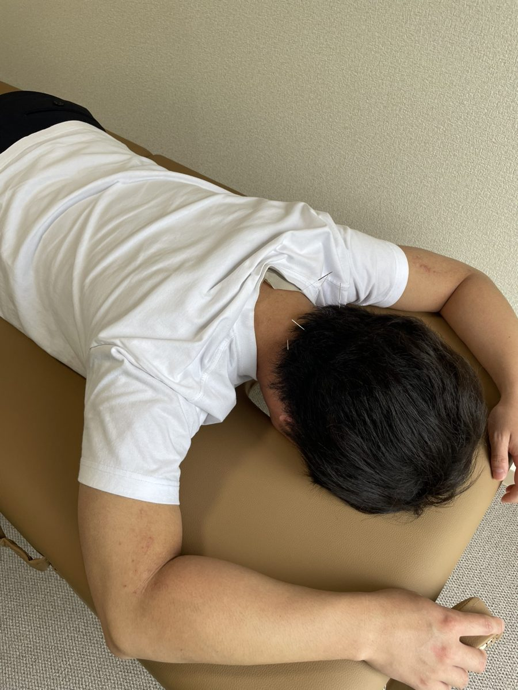
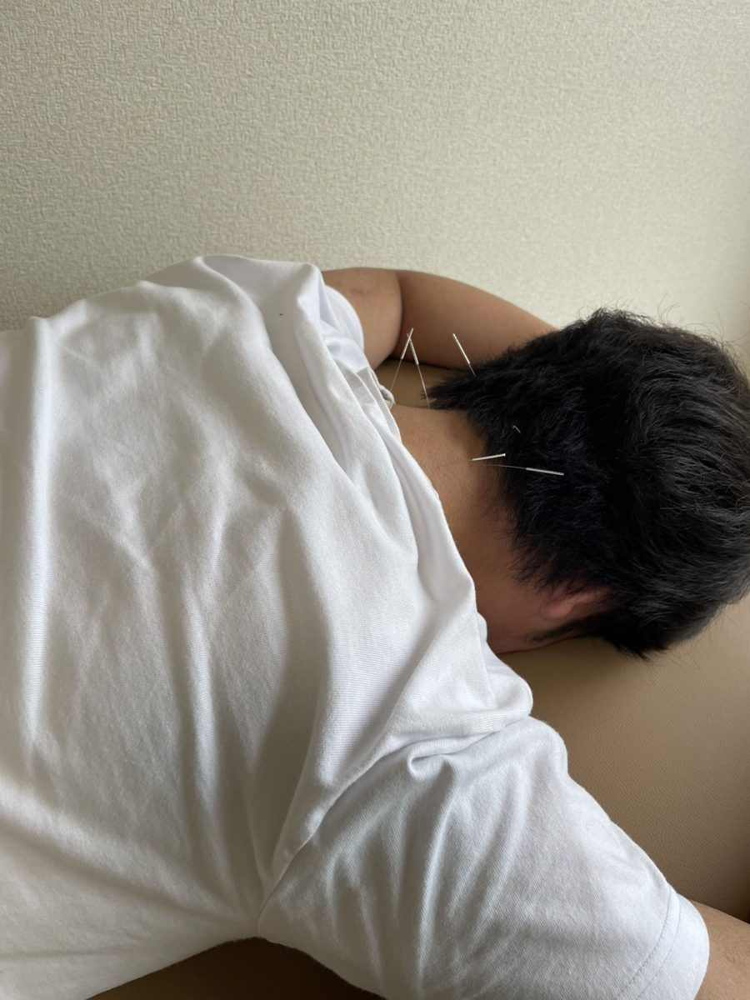

当院のスタッフに教えてもらうコーナー「現場の先生に聞いてみた」の第11回です。前回（第10回）まで、何度も「はりで筋肉をゆるめる」という話が出てきました。今回は、聞き手の北田が、田中功太さんに首のはりを実際に受けてみました。
はりで、どうして筋肉がゆるむの？
北田
これまで何度か「はりで筋肉をゆるめる」という話が出てきました。どういうしくみなんですか？
田中
はりが筋肉に刺さったから、その場でゆるむ、というわけではありません。刺した瞬間は、びっくりして少し力が入ることもあります。
刺さっていると、そこから「刺さっているよ」という刺激が脳に届きます。すると脳から、筋肉を動かす神経に「少し落ち着いてね」という合図が出て、じわっとゆるんでくる、というイメージです。
実際に受けてみました
北田
言葉だけではイメージしにくいので、実際に受けてみます。僕は首にヘルニアがあって、首がかたいので、首にお願いします。
田中
ヘルニアそのものを治すのは難しいのですが、しびれや痛みで余計に力が入ってしまう方には、それをやわらげる目的で施術をすることがよくあります。
（うつぶせになり、刺す場所をアルコールでふいてから、首に刺していきます）
田中
肩こりはあまり感じないとおっしゃっていましたが、しっかりかたいですよ。はりはやわらかいので、かたさが手に伝わってきます。
首の下のほうや、肩に刺すときは、向きによっては肺に近いので、特に気をつけています。

（左右3か所ずつ、合わせて6本を刺しました）
北田
刺されている間、ゆるんでいる感じは特にないですね。
田中
刺している間に「ゆるんできた」と感じる方は、少ないと思います。抜いたあとに動かしてみて、「さっきより動かしやすい」と感じるのが、いちばん多いです。
北田
首のところに、何か入っているような感じはあります。鼻血が出たときに、ティッシュを詰めているような感じですね。
田中
首や手は、そうした感覚を感じやすいところです。腰や足では、あまり感じにくいです。嫌な感じが強いときは、浅くしたり、抜いたりするので、遠慮なく言ってください。

首のはりは、誰でもできる？
北田
首にはりを刺すのは、誰でもできるんですか？
田中
首は敏感なところなので、血圧が変わったりしやすく、いきなり首に刺すことはあまりしません。まず手や足に刺してみて、からだの調子が大きく変わらないことを確かめてからにします。
また、高齢の方は、うつぶせでしばらく待つのがつらいことも多いです。その姿勢がとれる方なら、今のように刺せます。あおむけや座ったままでも、できる範囲で刺します。
北田
首が痛い方には、ほかにどこに刺すんですか？
田中
原因によりますが、手元の作業を長く続けている方なら、まず手に刺すことが多いです。手の緊張がほぐれると、肘や肩も一緒にゆるみやすくなるので、そこから運動をします。首には、ローラー鍼などの刺さないはりで、刺激の量を調整しながら施術することが多いです。
首や肩に刺すはりは、服を脱いでいただく必要があるので、施設に訪問したときなどは、難しいこともあります。
刺している間は、何をしているの？
田中
首に刺している間は動けませんが、手に刺しているときなどは、からだが大きく揺れない程度に、足の軽いストレッチをすることもあります。大きく動かすと、刺しているところが痛んだり、気持ち悪く感じたりするからです。
（10分ほどたって、はりを抜きました）
田中
刺したところに血が集まって、少し赤くなっていますが、どなたにも起きることなので心配いりません。
受けてみて、どうだった？
北田
首が回りやすい気がします。下を向くと痛かったんですが、スムーズになりました。座ってみると、いつもはこのあたりで止まるのに、今日はもっと動きます。
田中
よかったです。首の後ろの筋肉は、頭を引き上げる筋肉なので、ここがゆるむと下を向きやすくなります。
抜いた直後は、血圧の変化で少しだるくなる方もいます。少しゆっくりしていただくと、落ち着いてくることがほとんどです。
北田
疲れるような運動をしなくていいのも、いいですね。
田中
そうですね。体力が落ちていて、いきなり動くのが難しい方には、先にはりでやわらかくして、血の流れがよくなった状態で、できる範囲の運動をしてもらうと、負担が少なくてすみます。
1回で長年の生活習慣が全部消えるわけではないので、少しずつ、いい状態にからだを慣らしていくことが大切です。しばらくたって振り返ったときに「前よりよくなったな」と感じる、というのが、鍼灸らしい考え方だと思います。
北田
続けたいと思いました。ありがとうございました。
当院のご案内
当院は、大阪市鶴見区・城東区、東大阪市、大東市で、医療保険（健康保険）を使った訪問はり・きゅう（訪問鍼灸）を行っています。
料金は、1回 約300円〜500円程度（1割負担の場合）、交通費（訪問施術料）込みです。
無料体験も受け付けています。お気軽にご相談ください。
受付時間：平日 9:00〜18:00
はり・きゅうの感じ方や変化には、個人差があります。